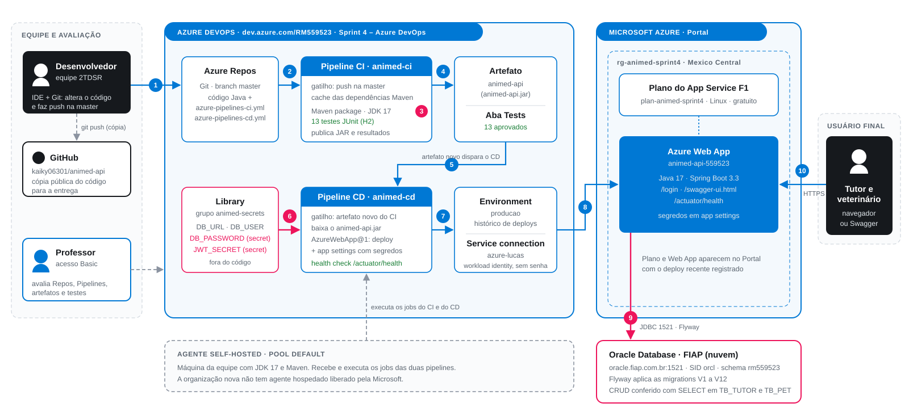

Sprint 4 · DevOps Tools & Cloud Computing · Azure DevOps (Repos + Pipelines) → Azure Web App → Oracle FIAP

| O que acontece | |
|---|---|
| 1 | O desenvolvedor altera o código na IDE e faz git push na master do Azure Repos. |
| 2 | O push dispara sozinho a pipeline de CI animed-ci. |
| 3 | O agente compila com JDK 17 e roda os 13 testes JUnit (H2 em memória). |
| 4 | O CI publica o artefato animed-api (JAR) e os resultados na aba Tests. |
| 5 | O artefato novo dispara a pipeline de CD animed-cd. |
| 6 | O CD lê os dados sensíveis do grupo animed-secrets (senha e JWT como secret). |
| 7 | O deploy é registrado no environment producao e autentica na Azure pela service connection, sem senha. |
| 8 | AzureWebApp@1 publica o JAR no Web App e o CD confere o /actuator/health. |
| 9 | A aplicação conecta no Oracle da FIAP por JDBC e o Flyway aplica as migrations. |
| 10 | Tutor e veterinário acessam o painel e a API por HTTPS. |
| Ferramenta | Papel |
|---|---|
| IDE + Git | Edição do código e push para a master. |
| Azure Repos | Repositório Git do projeto, com o código e os dois YAMLs. |
| Azure Pipelines (CI) | Build Maven, testes JUnit e publicação do artefato. |
| Azure Pipelines (CD) | Download do artefato, deploy no Web App e health check. |
| Library | Variáveis protegidas: usuário, senha do banco e segredo JWT. |
| Environment + service connection | Histórico de deploys e acesso à Azure por workload identity. |
| Agente self-hosted | Máquina que executa os jobs das duas pipelines (pool Default). |
| Azure App Service | Plano F1 e Web App Linux Java 17 que hospeda a aplicação. |
| Oracle FIAP | Banco em nuvem com as tabelas criadas pelo Flyway. |
| GitHub | Cópia pública do código para a entrega. |